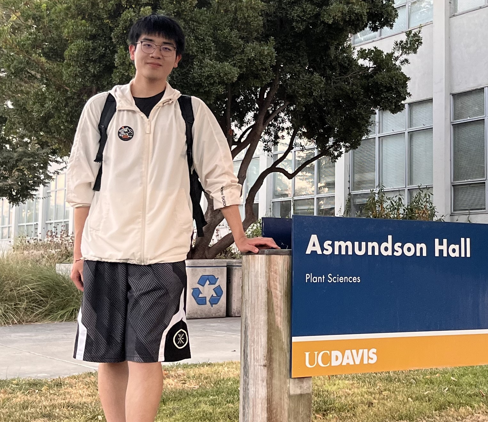

|  | Yu Li 李煜Senior Student [Github] [Linkedin] [CV] [Google Scholar] |
Biography
I am currently a senior student in Hongyi Honor College of Wuhan University, specializing in digital/analog circuits and embedded development. My current research focuses on generative AI and RL agents.
Recent News
[04/2025] I will be pursuing my ECE PhD supervised by Prof.Tian Lan at GWU. I will mainly explore RL and LLM aspects.
[03/2025] I will join the AGI Lab for a pre-graduation intern, mainly focusing on generative models.
[08/2024] I was awarded the Innova Excellence Scholarship, top 3% in our college.
[05/2024] I was awarded the Innova International Exchange Scholarship, thanks to Dr. Charles Huang and Charles Huang Foundation!
Selected Projects
I had a wide range of research interests during my undergraduate years.At the moment I'm mainly exploring generative AI and LLMs optimization methods.
|
AlphaAdam:Asynchronous Masked Optimization with Dynamic Alpha for Selective Updates
|

|
Sensor Fusion for Robust and Efficient Autonomous Vehicle Perception
|

|
[Code]
We leveraged the rich semantic segmentation information of SAM and applied its fine-grained attention capability to the feature extraction module of Transformer, achieving SOTA IoU scores in ultrasound image segmentation. |
|
[Code]
We explored the self-attention guidance mechanism of the Swin-Transformer structure in breast ultrasound images, used a multi-level encoder to deal with multi-dimensional features, and used spatial pyramid pooling and feature stream alignment to fuse shallow and deep information. |

|
[Code]
For endoscope medical scenarios, we use the diffusion model for depth estimation. We build a teacher model, set knowledge distillation, optical appearance and ddim losses, and introduce the teacher's discriminative prior, which significantly enhances the accuracy and confidence of the results. |
Education
Ph.D., Electrical and Computer Engineering, George Washington University (GWU), Sep/2025 - Jun/2030 (expected)
B.Eng., Hongyi Honor College, Wuhan University, Aug/2021 - Jun/2025
Experience
- Research Intern, Westlake University, 2025.
- Research Intern, UC Irvine, Summer 2024.
- Visiting Student, UC Berkeley, Spring 2024.
- Research Intern, UC Davis, 2023-2024.
- Research Assistant, WHU, 2022-2024.
Honors and Awards
| Innova International Exchange Scholarship, | Wuhan University, | 2024 |
| Innova Excellence Scholarship (Top 3%), | Wuhan University, | 2023,2024 |
| Academic Excellence Scholarship (Top 5%), | Hongyi Honor College, | 2022,2023,2024 |
| First-Class Scholarship (Top 5%), | Wuhan University, | 2022,2023,2024 |
Misc
| Patent: Energy-saving calculation method, | CN116085952. | |
| Journal/conference review services: | MICCAI 2025, ICCV 2025, IEEE Access |
Skills
Languages: Python, C/C++, Verilog, MATLAB, LaTex
Tools: PyTorch, Tensorflow, Vivado, Cadence, VCS